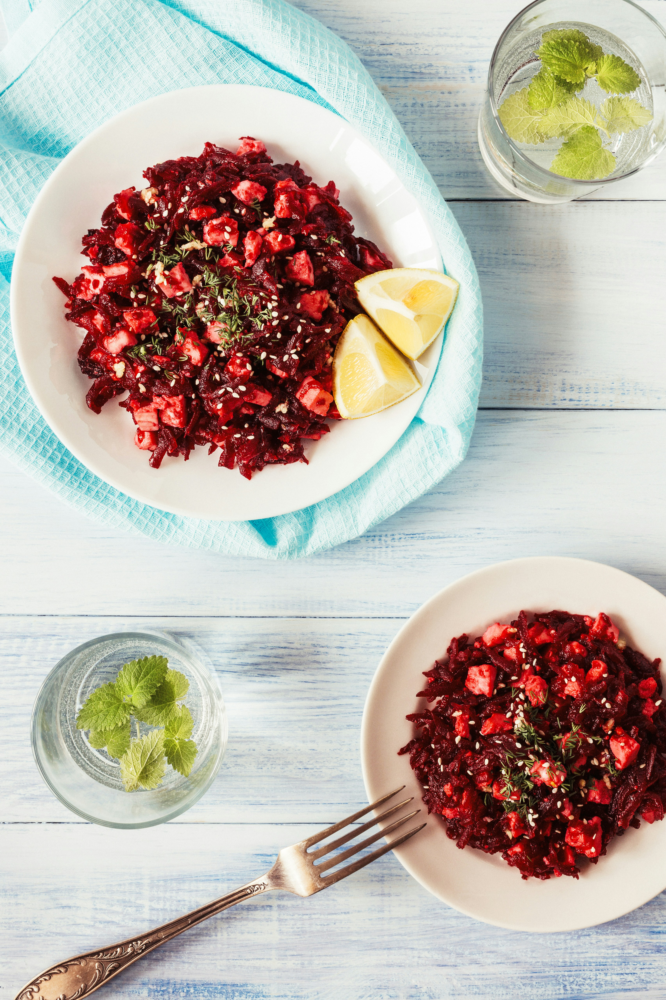

Add the 4 mashed bananas into a bowl, add the honey or syrup and whisk well.
Add the milk, the flour and baking powder.
Mix well.
Optionally you can add some chopped dark chocolate.
Preheat the oven in 180 degrees Celcius.Bake for 30 - 40 minutes.

Halloumi and beetroot salad
Ingredients:
baby Lettuce
250gr baby Spinach
Beetroots
4 pieces of halloumi
Cherry tomatoes to your liking 2 carrots ½ cucumber Salt
pepper,vinegar and olive oil
Instructions:
Chop the lettuce and baby spinach and add into a bowl.
Chop the cucumber, tomatoes and carrots.
Boil the beetroots for 30 minutes.
Grill the halloumi, chop and add to the bowl.
Mix the olive oil, vinegar, salt and pepper so you form a dressing and then add to the salad.
Mix well.
Enjoy!
Lemon Herb Roasted Chicken
Ingredients:
Whole chicken (about 3-4 pounds)
Fresh lemon
Garlic cloves
Fresh rosemary
Fresh thyme
Olive oil
Salt
Black pepper
Instructions:
Preheat your oven to 375°F (190°C).
Rinse the whole chicken under cold water and pat it dry with paper towels.
In a small bowl, combine freshly squeezed lemon juice, minced garlic, chopped fresh herbs (such as rosemary, thyme, and parsley), olive oil, salt, and black pepper to
create a marinade.
Rub the marinade all over the chicken, making sure to coat it evenly, including under the skin.
Place the chicken in a roasting pan or baking dish, breast side up.
Slice a lemon into rounds and tuck the slices around the chicken in the pan.
Cover the roasting pan with aluminum foil and roast the chicken in the preheated oven for about 1 hour.
Once cooked, remove the chicken from the oven and let it rest for 10-15 minutes before carving.
After 1 hour, remove the foil and continue roasting for an additional 30 minutes, or until the chicken is golden brown and cooked through. To ensure doneness, insert a
meat thermometer into the thickest part of the thigh – it should register 165°F (75°C).
Serve the Lemon Herb Roasted Chicken with your favorite side dishes and enjoy the delightful flavors of this classic dish.